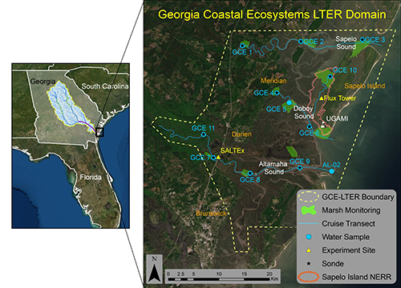

Welcome to the Georgia Coastal Ecosystems LTER
The Georgia Coastal Ecosystems Long Term Ecological Research site (GCE) was established by the National Science Foundation in 2000. The study domain encompasses three adjacent sounds (Altamaha, Doboy, Sapelo) on the coast of Georgia, U.S.A., and includes upland (mainland, barrier islands, marsh hammocks), intertidal (fresh, brackish and salt marsh) and submerged (river, estuary, continental shelf) habitats.

GCE LTER researchers seek to understand how these ecosystems function, how they change over time, and how they might be affected by future changes in climate and human activities. We accomplish this by tracking the major factors that can cause long-term change in coastal areas (e.g. sea level, rainfall, upstream development), and measuring the effects of these factors on the study site. We also use a combination of remote sensing, modeling, and focused studies, including large-scale experiments, to assess how key marsh habitats will respond to major changes expected in the future.
Since the GCE-LTER program began in 2000, our research has contributed significantly to understanding patterns and processes that shape estuarine and marsh environments. The highlights of our work can be found here:
- Research Overview (link not active!)
- Key Findings (link not active!)
- Signature Publications (link not active!)
- Signature Datasets - link not active
Program Information
The GCE field site is based at the University of Georgia Marine Institute on Sapelo Island, and the program is administered at the University of Georgia Department of Marine Sciences in Athens, Georgia. Individuals from multiple academic institutions and agencies are currently involved in GCE research and educational programs. The GCE Information Management System provides online access to hundreds of core data sets, ancillary data sets (link not active!) from partner agencies, a searchable document and imagery archive (link not active!) , and a searchable bibliography of over 50 years of research on the Georgia coast and Sapelo Island.
If you would like to sign up for our weekly newsletter click here.